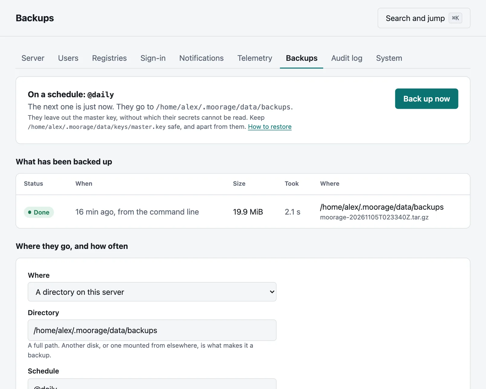
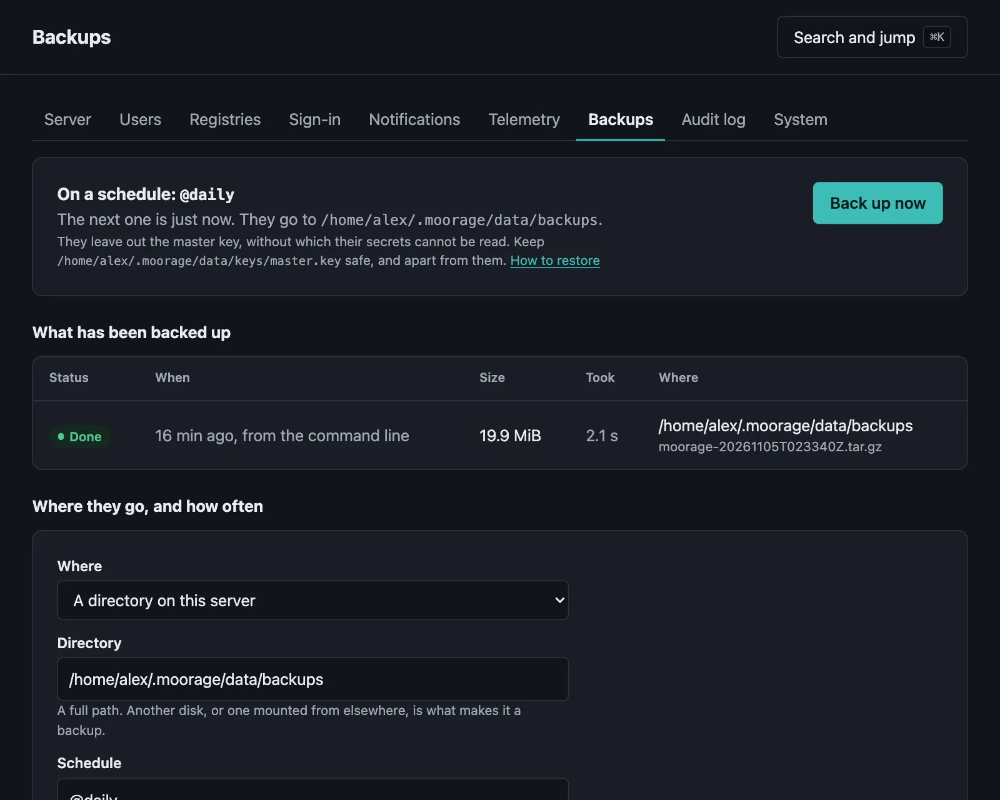

Backups
On demand and on a schedule, to a directory or a bucket, and restoring them.
On this page
A backup holds what a server cannot make again: its database, the apps' repositories and builds, their data directories and the server's certificates. It is one file, and the server goes on running while it is made. Logs and caches are left out, and so are toolchains, which the server fetches again as the apps that need them start. Restored on a machine with no way out, those apps need a mirror, under [toolchains] in server.toml.


moor server backup --to /mnt/backupsBackups run where the server is, as the user that runs it, so that on a system service that takes sudo.
The master key#
A backup leaves out keys/master.key, which encrypts the apps' secrets, so that a backup that goes astray gives them away to nobody. Without that key a backup's secrets are lost for good, so that keep it safe, and somewhere other than your backups.
Restoring needs that key to be in place, and refuses before reading any further if it is not the one that the backup was made with. --include-keys puts the key and the server's other keys in the backup, for a directory that you keep as safe as they are. A bucket is refused: there, one wrong setting gives away every secret you have.
A schedule#
Settings → Backups in the console says where they go, and how often:
- Where: a directory, or a bucket on S3 or a service like it. The secret key is sealed with the master key.
- Schedule: a cron expression, such as
@dailyor0 3 * * *, in the server's time zone. One that was due while the server was down is made when it comes back. - How many to keep: when a scheduled one finishes, older ones go.
With nothing said, they go to backups/archives in the data directory. That is a start and not a plan, since whatever takes that disk takes them too.
A backup that fails tells administrators in the console, and a channel with a rule for backup.failed. So does the next one that works.
To a bucket#
From the command line, the service's details come from the usual variables:
AWS_ACCESS_KEY_ID=... AWS_SECRET_ACCESS_KEY=... AWS_REGION=eu-west-1 moor server backup --to s3://acme-backups/moorageFor a service other than AWS, AWS_ENDPOINT_URL says where it is, and buckets are then addressed by path. Temporary credentials need AWS_SESSION_TOKEN as well. Its parts go up as they are made, so that a backup needs neither memory nor disk for the whole of it, up to the 160 GB that its parts come to, and a part that fails is tried again. Without a --to, the command uses what Settings → Backups says.
See what is there#
moor server backup listRead one through to see that it could be restored, without changing anything:
moor server backup verify /mnt/backups/moorage-20261104T120000Z.tar.gzRestoring#
Install the same version of Moorage or a newer one, configure it as before, and put the master key in place. Then, with the server stopped:
moor server restore /mnt/backups/moorage-20261104T120000Z.tar.gzmoor server startIt reads all of the backup to one side first, so that a damaged one changes nothing, and refuses one that did not finish or that does not hash to what was noted when it was made. On a server that already has a database, --force moves what is there aside rather than deleting it. Any apps still running are stopped just before the swap. The server starts them again when it starts, and brings an older backup's database up to date. Everyone can sign in as before, and browsers that trusted the server's own CA still do, as its key comes back, sealed in the backup with the master key.
Restore to a data directory at the same path as before: builds can hold links to their toolchains by their full paths. Without --include-keys, the server has a new SSH host key, so that those who push over SSH are told that it has changed.
Restore only your own backups. What a server restores, it goes on to run, and it refuses what no backup should hold, such as keys in one that says it has none. A .sha256 beside a backup shows that it is whole, and not who made it, so that whoever can write to where your backups go can change them: keep that as closed as the server.
Apps with databases#
The data directories are read while the apps go on running, so that a file being written at that moment may be caught halfway. For most files that does not matter, but a database file copied while it is in use may not open again, and the command says how many files changed as they were read: the server's log does for those it makes itself.
If an app keeps a database in its data directory, have a cron job dump it there shortly before the backup, and restore from the dump. For SQLite:
[[cron]]
name = "dump"
schedule = "45 2 * * *"
command = 'sqlite3 "$MOORAGE_DATA_DIR/app.db" ".backup $MOORAGE_DATA_DIR/app.backup.db"'The server's configuration#
A backup holds everything, to bring a server back. Its settings alone are a smaller thing, and a file you can read, keep with the rest of what you look after, or bring to another server: people and their roles, projects and who is in them, container registries, notification channels and rules, where backups go, and sign-in.
moor server config export > moorage-config.tomlSettings → System has the same file to download. It holds no secrets. Where one belongs, it names a variable of the environment:
format = 1
[[user]]
email = "ada@example.com"
name = "Ada Lovelace"
role = "admin"
[[project]]
name = "web"
[project.members]
"sam@example.com" = "deployer"
[[registry]]
host = "ghcr.io"
username = "robot"
password = "${MOORAGE_REGISTRY_GHCR_IO_PASSWORD}"To bring it in, look first at what that would do:
moor server config import moorage-config.toml --dry-runsame user ada@example.com
create user sam@example.com they need a link to choose a password, or single sign-on: moor server users invite sam@example.com
create project web
skip registry ghcr.io set MOORAGE_REGISTRY_GHCR_IO_PASSWORD and bring this in againThen do it, with those secrets in the command's environment:
MOORAGE_REGISTRY_GHCR_IO_PASSWORD=... moor server config import moorage-config.tomlIt adds and changes, and removes nothing. What the file does not mention stays as it is, down to a single setting, and a server keeps the secret it has when the variable is not set, so that bringing a file back to the server it came from changes nothing. Only variables whose names start with MOORAGE_ are read: a file from someone else cannot ask for anything else in your environment. Something that cannot be done is said, and does not stop the rest; the command then fails. A dry run says the same, except that your identity provider is only asked when it is done.
People's passwords and second factors do not go with them, so someone new needs moor server users invite, or single sign-on. A name only counts when it makes the account, and a disabled user stays disabled until you enable them. server.toml is apart from this: it is a file already, and is for you to copy. So are your apps: those come from their manifests and repositories, and a rule for an app that is not deployed yet is said to have failed, until it is.